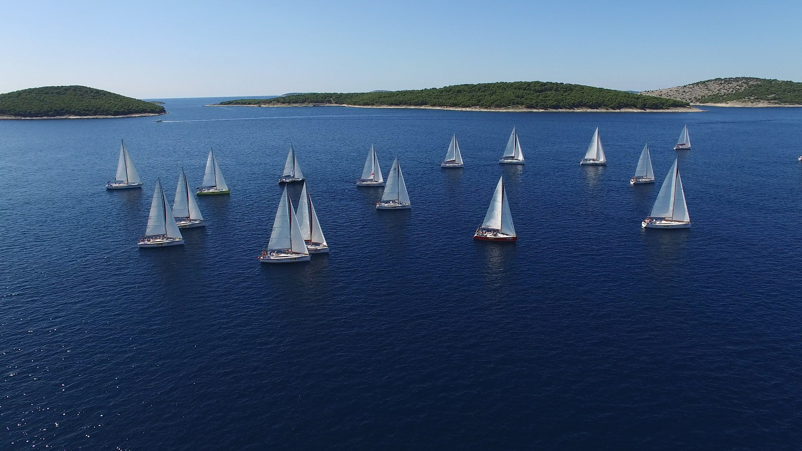
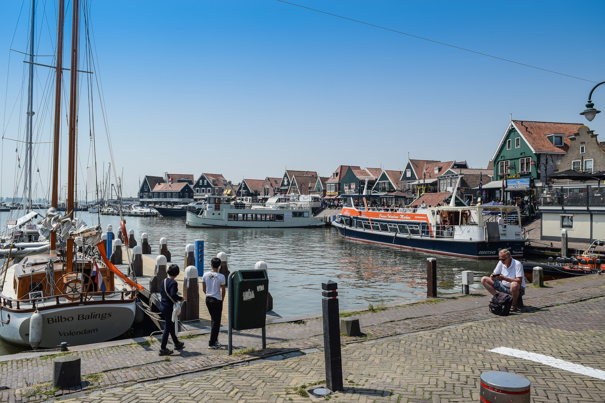

Harbor Gallery
Breezy wind along the pier.
Cyclists hanging out.
Cyclists hanging out.
Cyclists hanging out.
This website has some subtext that goes here under the main title. It's a smaller font and color is lower contrast.
“The sea is emotion incarnate. It loves, hates, and weeps. It defies all attempts to capture it with words and rejects all shackles. No matter what you say about it, there is always that which you can't.”